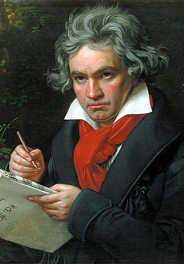
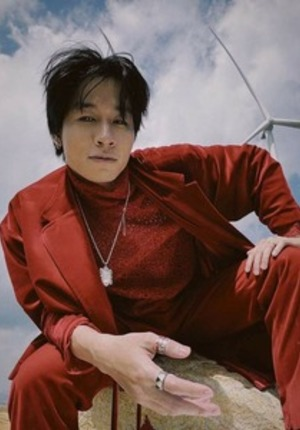

About me
I am working in the information technology field.
- Fullname: Le Gia Uy
- Country: Vietnam
Education
- Ke sat Highschool
- Hanoi University of Industry
Scores
| Math | Physics | English | ||
|---|---|---|---|---|
| Math 1 | Math 2 | |||
| 2019 | 7.75 | 0 | 8.75 | 9.2 |
| 2022 | 7.8 | 0 | 8.75 | 9.2 |
Social Media
Youtube: Le Gia Uy
Facebook: Le Gia Uy
Favourite Musicians

Frédéric Chopin
Là nhà soạn nhạc và nghệ sĩ dương cầm người Ba Lan của thời kỳ âm nhạc Lãng mạn. Ông nổi tiếng toàn thế giới như một trong những người đi tiên phong của thời kỳ này "với chất thơ thiên tài đi cùng với kỹ thuật không một ai đương thời có thể sánh bằng
Franz Liszt
Là một nghệ sĩ piano và nhà soạn nhạc người Hungary. Ông là nhạc sĩ có danh tiếng ở khắp châu Âu vào thế kỉ 19 nhờ có kỹ thuật điêu luyện bậc nhất trên bàn phím

Ludwig van Beethoven
Là một nhà soạn nhạc cổ điển người Đức. Ông là một hình tượng âm nhạc quan trọng trong giai đoạn giao thời từ thời kỳ âm nhạc cổ điển sang thời kỳ âm nhạc lãng mạn.
XXXTENTACION
Là một rapper, ca sĩ và nhạc sĩ người Mỹ. Anh là một nhân vật nổi tiếng trong SoundCloud rap, thường chơi thể loại nhạc trap có yếu tố lo-fi và 808s

Vũ Đinh Trọng Thắng
Là một nhạc sĩ, ca sĩ người Việt Nam. Anh là người sáng tác, hát chính, chơi guitar rhythm, và đồng sáng lập của ban nhạc Ngọt.
Sơn Tùng M-TP
Là một nam ca sĩ kiêm sáng tác nhạc, rapper, nhà sản xuất thu âm và diễn viên người Việt Nam.
-